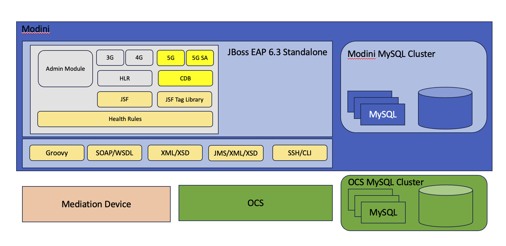
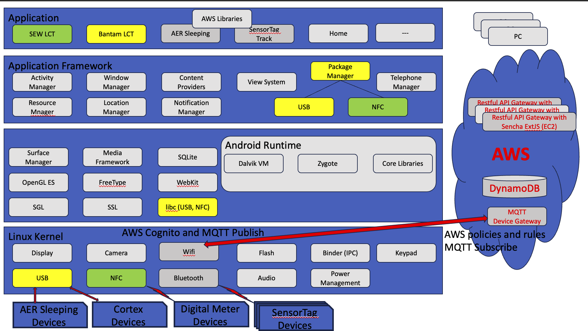
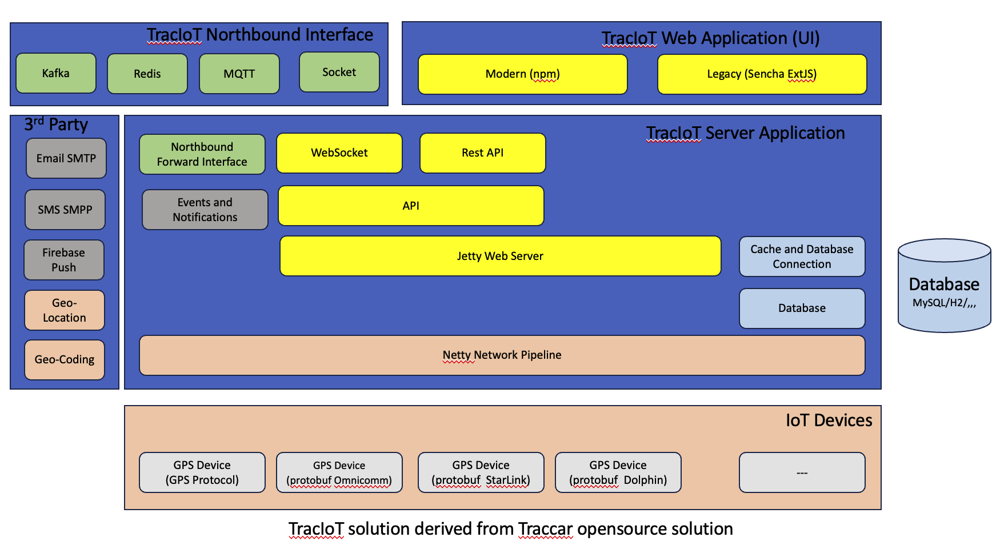
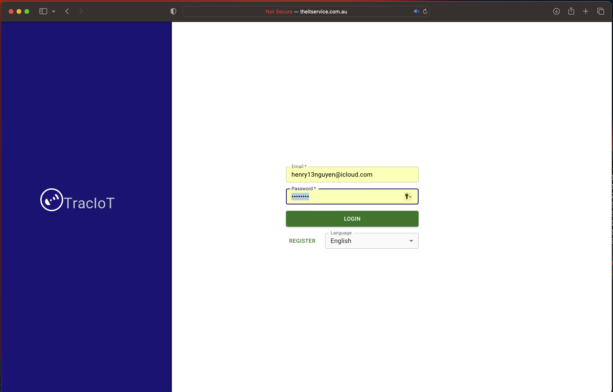
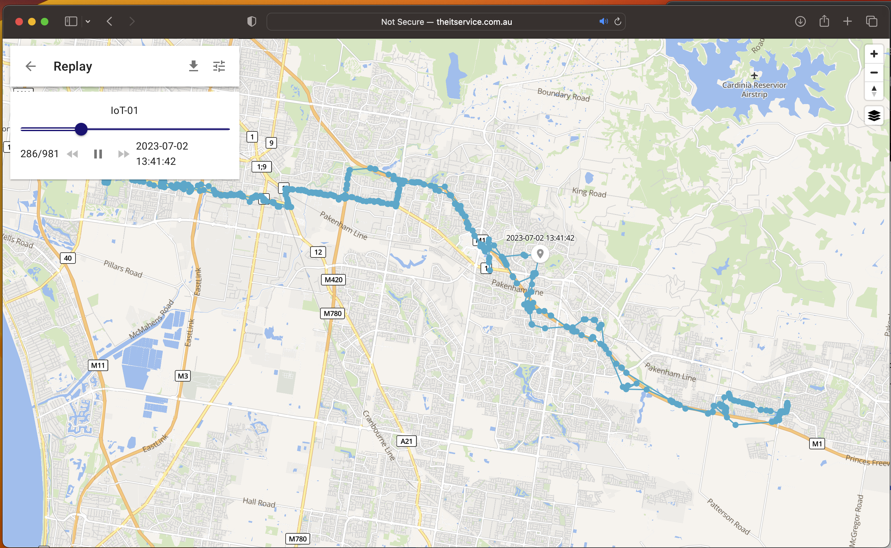
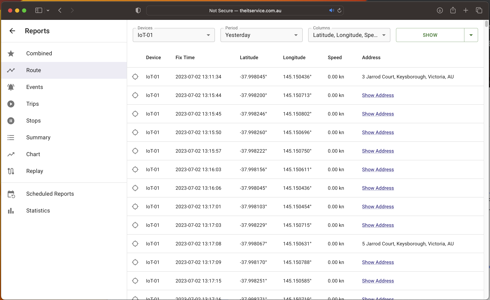
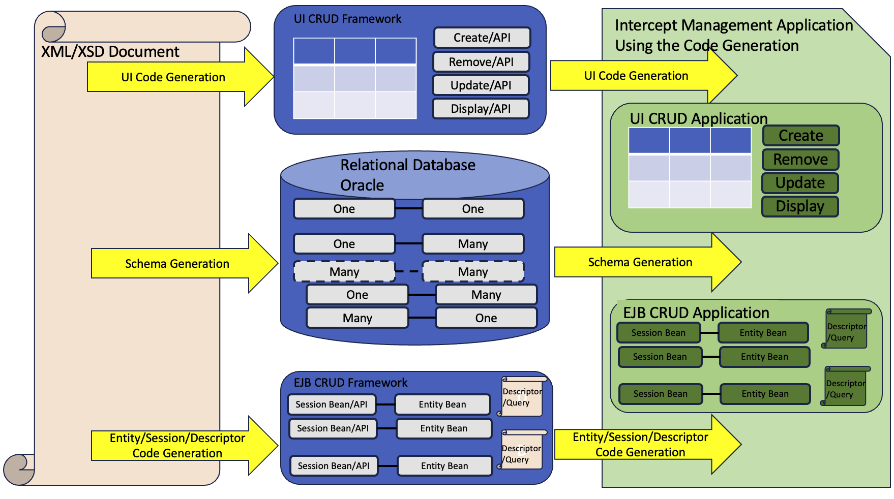
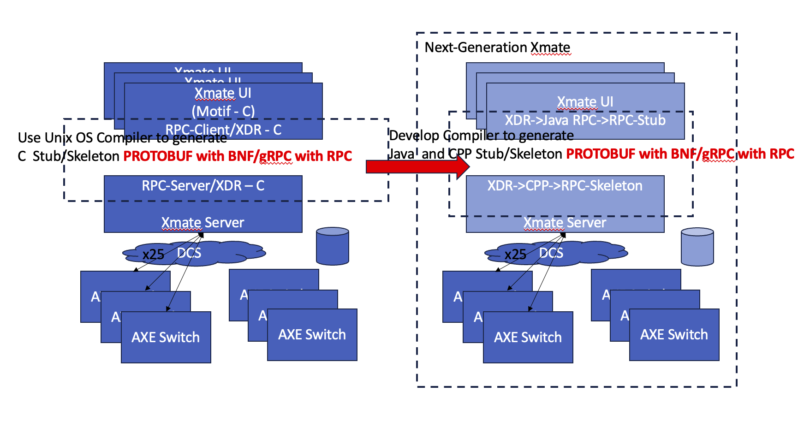
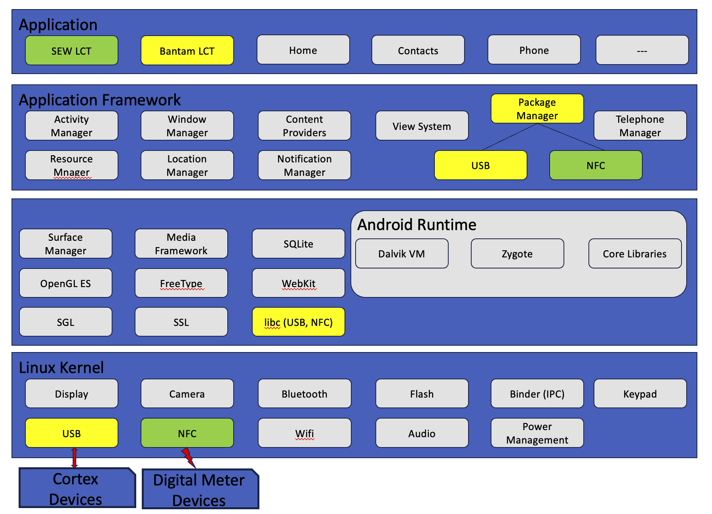
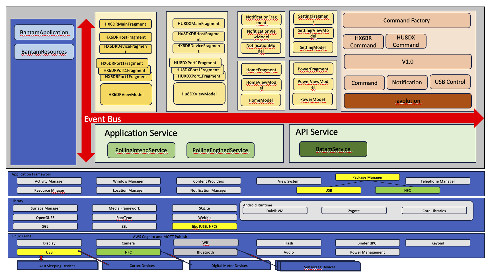

Commercial Projects
June 9, 2023
Introduction #
Commercial projects are classified into:
- Java Projects
- Infrastructure Projects
- Cloud solution Projects
Java Projects #
Modini for Telstra @Unico/CGI #
 Enhanced the existing Service Assurance Management System supporting from 3G and 4G to 5G and 5G SA mobile services using Java7/J2EE with JSF/Javarscript/Groovy for the FrontEnd and JBoss/EJB/JMS/SOAP/CLI over SSH to interface to Mediator Devices. The persistent storage is MySQL.
Mobile Prepaid and Postpaid Mobile Service Migration for TPG @Unico/CGI #
Enhanced the existing Phase-1 Prepaid mobile service migration to support Postpaid as well using Java8 Batch Spring Boot v2 and Red Hat Camel v2 to interface to the Oracle database running as a docker and Matrixx using JMS. The Subscriber Loader component loads the mobile service and subscriber details to be used in the migration. The Batch Manager perform the migration for prepaid mobile service and postpaid mobile services. The Filter loads subset of the prepaid and postpaid to be migrated. The Metrixx component sends the migrated result to a new Matrix Billing and Charging System.
Data Acquisition System for Sommetrics AER Sleep IoT Device @Extel Technologies/Sommetrics #
 Developed the IoT Data Acquisition to extract the sleeping data from the Android device via USB and send the sleeping result set to AWS Device Gateway via MQTT. The IoT Android was developed to use the AWS Cognito to load the Certificate for encryption, AWS Device Gateway Policy to authenticate the IoT device, AWS Device Gateway Rule to authorise and persist the result set to the DynamoDB. The scalable Restful API cluster was developed in the back to process the result set at the BackEnd and the Sencha ExtJS was developed to allow the user to access the report.
Data Acquisition System for the IoT Device with GPS Tracking and Texas Sensor Tags @Extel Technologies #
 Developed the IoT Data Acquisition to extract the GPS data from the Android device and extract IoT Texas Sensor Tags data via Bluetooth the result set to AWS Device Gateway via MQTT. The IoT Android was developed to use the AWS Cognito to load the Certificate for encryption, AWS Device Gateway Policy to authenticate the IoT device, AWS Device Gateway Rule to authorise and persist the result set to the DynamoDB. The scalable Restful API cluster was developed to display the tracking to the Google Map together with the IoT Texas Sensor Data.   
Code Generation and Interception Management System @Ericsson Australia #

- Developed the framework to generate Solution Architecture Document (SAD includes Subsystems and nested Subsystems) and Detailed Design Document (DDD include Class Diagram and Sequence Diagram) documentation from Rational Rose
- Developed the UI CRUD Framework (I used the MFC/C/Windows framework developed by Nokia Engineers and I implemented the same concept using Swing/Java 1.4 - I would like to acknowledge the Nokia Engineer - I was a PM managed the Local Craft Terminal or Node Manager at Nokia)
- Developed the EJB CRUD Framework
- Developed code generation for One-One, One-Many and Many-Many relationships
- to generate the schema for database
- to generate the UI CRUD
- to generate the EJB CRUD
- Developed the Interception Management Application using the Code Generation
Element Manager for the DSLAM to support ADSL/ADSL2/ADSL2+, Long Reach with SHDSL Repeater and Backhaul with ATM/ATM-IMA and IP @Extel Technologies #
Developed the Element Manager to perform Provision, Commission, Operation, Administration and Maintenance for the Long Reach ADSL DSLAM. The Element Manager was developed with
- Various RFCs for SNMP v1/v2/v3 and ADSL/ADSL2/ADSL2+ for the tributary access network, SHDSL for the repeater network and ATM/ATM-IMA/IP for the backhaul network
- J2EE
- Back End: Java 1.4/1.5 and Apache Tomcat
- MVC Front End: Struts v1/v2 Framework for MVC, JSP, HTML/HTTP, Javascript and WebSocket with value pair for the real time notification feature.
- Database with MySQL or Oracle
CPP Projects #
LSI Scan@Extel Technologies/LSI #
Enhanced the Parcel Scanning research result for Melbourne University and Collaboration with Melbourne University Consortium, Extel Technologies and LSI. The Parcel Scanning research hypothesize into the Artificial Intelligence by training the digital scan to detect organic material to be trained to detect drugs and metal material to be trained to detect gun and explosion. The enhancement comprised of turning the research result into the commercial product including proving the result was correct with better technique
XMate Element Manager for AXE Switches@Ericsson Australia #
 Enhanced the XMate with new features and fixing defects. Developed the new architecture using RPC CPP and RPC Java 1.4. Developed the compiler to generate the CPP and Java stub and skeleton (aka gRPC) code from the RPC XDR (aka protobuf) template. The Java and CPP were serialized and deserialized using the commercial STD Libraries. Developed the Proof Of Concept using the RPC CPP and RPC Java - the new generation of XMate.
Element Manager for the ISDN Basic Access Rate @Telecom Australia/Telstra #
Developed the Element Manager to perform Operation, Administration and Maintenance for the ISDN Basic Access rate using TMN Q3 Short Stack. Specified the interface to allow the IDSN BA to send alarms to the TUSC Alarm Management System.
Android Projects #

Android Application used to perform the commission and provision and maintenance of the Water Digital Meter via NFC @Extel Technologies/South East Water #
Developed the Local Craft Terminal application to perform Commission, Provision and Diagnostic operations on the South East Water digital meters using the Android/Java to interface and interoperate with the Firmware/C via NFC sensor and Javolution (Java to C Parser and Formatter).
Android Application used to manage the battery devices via USB @Tectonica #
Code Generation and Interception Management System @Ericsson Australia #
 Developed the Local Craft Terminal application to perform automatic Commission, Provision and Diagnostic operations on the battery charging to military devices using the Android/Java to interface and interoperate with the Firmware/C via USB and Javolution (Java to C Parser and Formatter).
Android Application used to acquire data from IoT device and transport data to the AWS #
Android Application used to acquire sensor and gps data from IoT device and transport data to the AWS #
Infrastructure Projects #
Infrastructure Projects at ANZ Bank #
CMP #
All Australian/Global credit transactions are processed and maintained in the CMP solution before transport to the end systems.
Money Laundry Protection #
Tracking all money transaction related to the Money Laundry
Bank Transaction Reconciliation #
All ANZ banking transactions are validated and reconciled.
Finacle Retail Banking at China/Hong Kong/Lao/Vietnam/Singapore #
Exception step to the above ANZ hired the third party Data Centres for cost affective reasons. The MPLS network is used instead of the dedicated dark-fibre network like in Australia. Most projects at ANZ Bank were implemented with the following workflows:
- Worked with the Solution Architect to perform the Order of Magnitude estimation with +/- 30%
- Worked with Oracle or Oracle Retailed Company to perform Detailed estimation with +/- 10%
- Worked with the ANZ Environment Manager team to plan the private virtual cloud networks to deploy the infrastructure
- Racked and stacked Commodity to Midrange servers to Primary/Secondary Data Centres with High Available Network, Storage, Power consideration
- Build the OS, Network, Storage into the planned environments, Production, Performance/Recover, Testing and Development
- Support the Environment Management and Development team from the Infrastructure daily tasks
- Specified and document the Disaster Recovery Plan with various protection levels, bronze, gold, platinum etc…
- Performed Disaster Recovery Test with Network, Storage and Application teams to ensure that the Planned Outage to meet the plan protection levels.
- Transitioned the projects to the Operation team
- Performed Level 3 support to the Operation team
Infrastructure Projects at Australia Post #
Most projects at Australia Post were implemented with the following workflows:
Digital Transformation Projects #
- Performed the Order of Magnitude estimation with +/- 30% and wrote the Solution Architecture document with consideration to Computing, Network/Security, Storage.
- Performed the Detailed estimation with +/- 10% and wrote the Design document with consideration to Computing, Network/Security, Storage.
- Performed the integration solution to existing Australia Post IT solution
Data Centre Planning/Design/Deployment/Integration at the Parcel Sorting #
Melbourne (MPS) - Completed #
Sydney Parcel Sorting Centre - Cancelled #
Brisbane Parcel Sorting Centre - Cancelled #
- Performed the Order of Magnitude estimation with +/- 30% and wrote the Solution Architecture document with consideration to Computing, Network/Security, Storage specified by the Parcel Solution vendor.
- Performed the Detailed estimation with +/- 10% and wrote the Design document with consideration to Computing, Network/Security, Storage specified by the Parcel Solution vendor.
- Designed the Parcel Data Centre with Power consideration Primary, Secondary and Diesel UPS
- Integrated the Parcel Data Centre IT solution with Australia Post IT solution
Cloud Solution Projects #
Data Acquisition System for Sommetrics AER Sleep IoT Device @Extel Technologies/Sommetrics #
Developed the IoT Data Acquisition to extract the sleeping data from the Android device via USB and send the sleeping result set to AWS Device Gateway via MQTT. The IoT Android was developed to use the AWS Cognito to load the Certificate for encryption, AWS Device Gateway Policy to authenticate the IoT device, AWS Device Gateway Rule to authorise and persist the result set to the DynamoDB. The scalable Restful API cluster was developed in the back to process the result set at the BackEnd and the Sencha ExtJS was developed to allow the user to access the report.
Data Acquisition System for the IoT Device with GPS Tracking and Texas Sensor Tags @Extel Technologies #
Developed the IoT Data Acquisition to extract the GPS data from the Android device and extract IoT Texas Sensor Tags data via Bluetooth the result set to AWS Device Gateway via MQTT. The IoT Android was developed to use the AWS Cognito to load the Certificate for encryption, AWS Device Gateway Policy to authenticate the IoT device, AWS Device Gateway Rule to authorise and persist the result set to the DynamoDB. The scalable Restful API cluster was developed to display the tracking to the Google Map together with the IoT Texas Sensor Data.